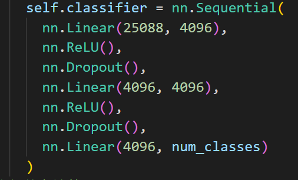

Paddle零碎知识点
Paddle学习笔记
1.paddle 训练的神经网络输入必须是[N,C,H,W]的Tensor，从DataLoader里返回的数据就是这种Tensor。但如果输入的数据不是从DataLoader获得的，必须手动转化成这种shape的Tenor。升维用paddle.unsqueeze。
2.paddle.metric.accuracy(predict,true_label)这个评价正确率的函数中，predict的shape是[batchsize,总类数]，而true_label的shape是[batchsize,1]
实际上这个函数会对输入的predcit进行一个top-k运算，即求出概率最大的那个预测结果的值作为预测Label。
true_label这个Tensor中的数据类型为int64
3.paddle.nn.CrossEntropyLoss()计算loss时，通常是用2元谓词的方式，即实例一个LOSS对象，然后用该对象(input,label)来算。
input (Tensor): - 输入 Tensor，数据类型为 float32 或 float64。其形状为 [Batchsize,C]，其中 C 为类别数。
label (Tensor):
当 soft_label=False 时，输入 input 对应的标签值，数据类型为 int64。其形状为 [Batchsize].
当 soft_label=True 时，Label的数据类型为 float32 或 float64 且每个样本的各标签概率和应为 1。
4.飞桨框架的 API 有原位（Inplace）操作和非原位操作之分，原位操作即在原 Tensor 上保存操作结果，输出 Tensor 将与输入 Tensor 共享数据，并且没有 Tensor 数据拷贝的过程。非原位操作则不会修改原 Tensor，而是返回一个新的 Tensor。通过 API 名称区分两者，如 paddle.reshape是非原位操作，paddle.reshape_ 是原位操作。
5.修改数据类型(dtype)
对于常见的np.ndarray数据类型，可以用.astype()来修改数据类型
对于Tensor数据类型，使用paddle.cast()接口来修改
6.GPU版本的paddle默认会把Tensor放到GPU上，不需要手动放进去
7.paddle.vision.transforms中的各种函数，除了ToTensor外都不会改变数据类型，都保持原来的np.ndarray不变。
8.如何将OpenCV按HWC读取的图片转成CHW？
法1：通过ToTensor可以指定转换后的通道顺序
注意：不管是paddle还是pytorch，使用ToTensor同时也会对数据进行归一化到[0,1]，因此，如果要在ToTensor后边进行Normalize的话，mean=[0.5], std=[0.5]。如果要在ToTensor前边进行Normalize的话，mean=[127.5], std=[127.5]。
还有就是ToTensor()对输入就是CHW顺序的图片很不友好，它默认所有输入都是HWC的，因此可能会打乱图像的通道顺序，因此，这时就不需要用ToTensor()这个函数了
法2：.transpose([2,0,1])
法3：transform中的Transpose
9. 一般的分类问题，由于CrossEntropyLoss()自带了SoftMAX函数，所以在构建网络的时候，最后输出的时候没有加Softmax，所以实际输出并不是概率。如果想要让输出变成每一类的概率的话，就得手动再套一层Softmax函数
10.迁移学习的方法
迁移学习包含3种策略
载入原始模型的预训练参数，然后训练时只训练自己修改的全连接层的参数，或者只训练一部分层的参数
载入原始模型的预训练参数，但是对所有层的参数都进行训练
只载入原始模型的结构，不加载参数，然后从头开始训练
如何指定自己要训练的部分呢？
optim = paddle.optimizer.Adam(parameters=xxx)
nn.Layer()类的.parameters()这个API会返回当前层及所有子层的参数。
如果要训练整个网络，则：parameters=mymodel.parameters()
如果要训练指定层：
先用nn.Layer()类的.sublayers()[i]获取第i个子层，再调用.parameters()获取其参数即可。
11. 如何将OpenCV读取的BGR的图片转成RGB？
通过transform.Normalize()中的to_RGB 设置成True可以将图片转成RGB顺序的
12. 数据类型问题
paddle神经网络训练的Tensor中的数据类型、、Normalize后的数据类型都是float32，OpenCV如果要显示一张图，必须转成HWC和uint8
13.迁移学习时如何加载官方给的预训练权重？
paddle模型保存的参数实际上是得到了一个字典，该字典中存了每一层的名字以及其对应的参数，因此，必须保证 你想要加载预训练参数的层 的结构以及名字和原始模型中的一致。

比如这个模型的最后一个线性层中的参数，保存在字典里的键应该是classifier.6.weight和classifier.6.bias，你自己定义的模型必须也把子网的名字设为classifier，把对应的线性层放到该子网的第6个才行，不然就加载不了
14. 从头开始训练一个神经网络时，需要关注卷积层、线性层的参数的初始化方式，通常使用Xavier这种初始化方式，因为它能够使神经网络中的各层的输出分布的更加均匀，有利于反向传播时求梯度(如果输出集中在0或1附近，则会发生梯度消失)以及更新权重，这样的话模型收敛地会更快。
15. 在网络中的激活层前面最好加上一个BatchNormalize层，它人为的使上一层的输出变成正态分布，这样有利于反向传播时求梯度以及更新权重，这样的话模型收敛地会更快。如果加了BN层，则不需要太关注参数的初始化，并且可以把学习率设大一点，且可以防止过拟合